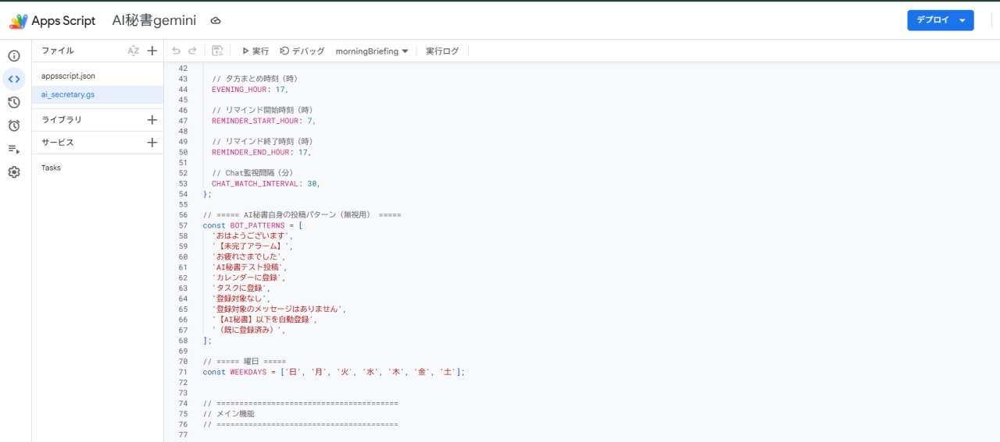

← 実績一覧へ戻る
← 実績一覧へ戻る
AI秘書 第2世代（GAS × ChatGPT版）

課題（Before）
第1世代（Claude版）は PC 上で動作する仕組みのため、PC が起動していない時間帯は通知が動かないという制約があった。
やったこと
- Google Apps Script ＋ OpenAI（ChatGPT）API でサーバーレスに再構築
- クラウド上のみで完結するため、PC の電源状態に関係なく24時間稼働
- 第1世代の運用で得た改善点（重複チェック等）を引き継いで実装
成果（After）
PC 不要でいつでも通知が届く体制に。同じ仕組みを異なる AI 基盤で再構築できたことは、環境を選ばず自動化を導入できる再現性の証明。